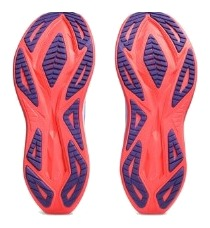
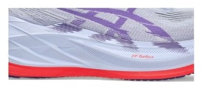

DAILY｜万能トレーナー
高いが、1足で済む。
¥24,200はデイリーとしては高い。ただ、実測252gの軽さ、0.83のグリップ、0.5mmしか削れない耐久性を同時に持つ靴は多くない。あれこれ買い足す代わりに、これ1足で済ませる。そう考えると計算が合ってくる。
ジョグからペース走まで1足で済ませたい人。週の距離が多い人。雨の日も走る人。
予算を抑えたい人。とにかく柔らかい靴が好きな人。


実測252gは今回の6足で最軽量である。摩耗深度0.5mmも最少で、推定寿命は約800kmになる。価格は高くても、1kmあたりは約30円で、ペガサス 41（約28円）に近い。
前足部のエネルギーリターンは65.5%で、6足で最も高い。スピードの点が3.5と、デイリーとしては高い理由である。
衝撃吸収は130SAで、見た目の厚さから想像するより低い。スタックは37/45mmあるが、柔らかさを求めて買う靴ではない。
5点満点。計測値を当サイトのルールで点数にしたもの。
グリップ5.0、耐久性5.0、通気性5.0と、満点が3項目ある。クッションは3.5で、デイリーで比重の大きい項目が伸びなかった。それでも性能点は3.96で、デイリー67足中13位に入る。
高いほど反発する。
小さいほど減りにくい。
| スーパーブラスト 2 | ノヴァブラスト 5 | 1080 v14 | |
|---|---|---|---|
| 価格 | ¥24,200 | ¥15,400 | ¥19,800 |
| 実測重量 | 252g | 254g | 285g |
| 衝撃吸収（SA） | 130 | 141 | 142 |
| エネルギーリターン前足部 | 65.5% | 66.5% | 59.4% |
| 摩擦係数 | 0.83 | 0.53 | 0.52 |
| 摩耗深度 | 0.5mm | 0.9mm | 0.6mm |
| 性能点 | 3.96 | 4.08 | 3.84 |
| コスパ点 | 4 | 5 | 4 |
ノヴァブラスト 5は安さで勝ち、性能点も上回る。それでもグリップ、耐久性、軽さの組み合わせでは、スーパーブラスト 2に別の魅力がある。走る距離が多い人ほど、差が効いてくる。
通気性は5段階の5で、暑い時期にも強い。ヒール剛性は3で、かかとの固定は強くない。かかと幅97.6mmの広い土台で安定性を確保している。曲げ剛性は18.4Nで、ペガサス 41の約2倍ある。
この靴の価値は、1足で役割を兼ねられる点にある。すでに複数足を持っている人には、割高に感じるかもしれない。2足を買うつもりだった人こそ、比べる価値がある。
週15kmなら、800kmを走るまで約1年。週1回のペース走にも対応できるので、2足目を買わずに済む可能性が高い。初期費用を2足分の出費と比べて考えるといい。
安い靴ではない。ただ、反発、グリップ、耐久性、軽さをまとめて1足に求めるなら、この値段には理由がある。
※本記事は海外ラボ（RunRepeat）の計測データとメーカー公表値、当サイトの計算をもとにした分析です。計測はUS9（約27cm）です。1kmあたりの費用は摩耗深度から推定した寿命での概算です。価格は当サイトの掲載値で、変更されている場合があります。